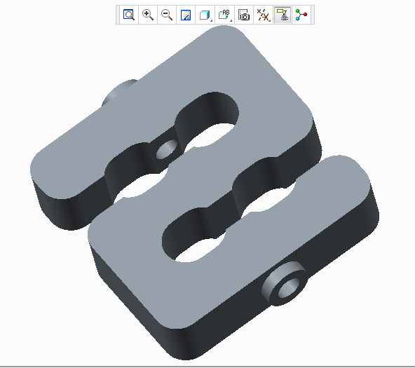

.pdf
.pdf
Sensor
1. Introduction
Presentation of the basic for force measurement with strain gauges.
A strain gauge is a device used to measure strain on an object. The most common type of strain gauge consists of an insulating flexible backing which supports a metallic foil pattern. The gauge is attached to the object by a suitable adhesive. As the object is deformed, the foil is deformed, causing its electrical resistance to change. This resistance change, usually measured using a Wheatstone bridge, is related to the strain by the quantity known as the gauge factor.


2. Running the case
The command line to run this case is
mpirun -np 4 feelpp_toolbox_solid --case "github:{repo:toolbox,path:examples/modules/csm/examples/sensor}"3. Data files
The case data files are available in Github here
4. Model/Geometry
The first step is to create the model of the object, which we can simply do in the Creo Parametric program. With this program was the fastest and easiest way to create the model.
The finished geometry (Creo) and the meshed model (Gmsh):
